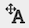

Advanced Visualization: Customizing Node Labels
This protocol describes how to customize the node label position, color and rotation in Cytoscape, to improve legibility.

Open Example Data
- Start by opening the Yeast Perturbation example session from the
Starter Panel . - Find the GAL1 node, for example by using the
Network Search interface.
For this network, the
Editing Node Label Position
One approach is to change the
- In the
Style interface, findNode Label Position under theProperties drop-down. - Click the
Def. column ofNode Label Position to update the default mapping. - Drag the
Object to the top right of theNode in the interface. ClickOK . The node labels will now appear in the upper right of corner of each node.
Editing Node Label Position
So far, we edited the nodel label position for all nodes. It is also possible to update the node label position for only specific nodes.
- First, change the
Node Label Position back to the center of the node. - In the
Network View Tools , click theToggle Node Label Selection  button. - Select the HAP4 node, right behind the GAL4 node. Click on the node label to select it, and drag the label to the desired location, for example the upper right corner.

Editing Node Label Rotation
In addition to customizing the position of the label on the node, the rotation of the label can also be customized. For example, if a particular part of the network has overlaping nodes, the rotation of some node labels can be adjusted to increase legibility.
- In the
Style interface, findNode Label Rotation under theProperties drop-down. - Select the GAL11 node and in the
Bypass column ofNode Label Rotation , set the bypass to 20. This will rotate the node label 20 degrees clockwise.
Editing Node Label Color
In some cases, changing the position of nodes labels isn't ideal, as the can label overlap other nodes. For these cases, we can change the
- Select the GAL1 node.
- In the
Bypass column of theNode Label Color . Select white as the new color.